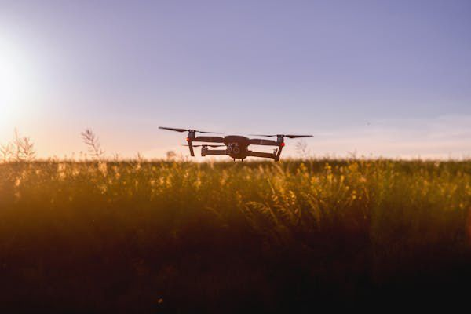
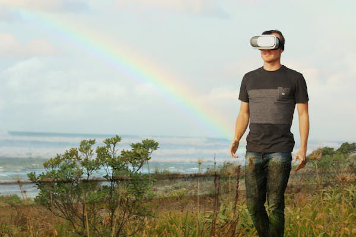
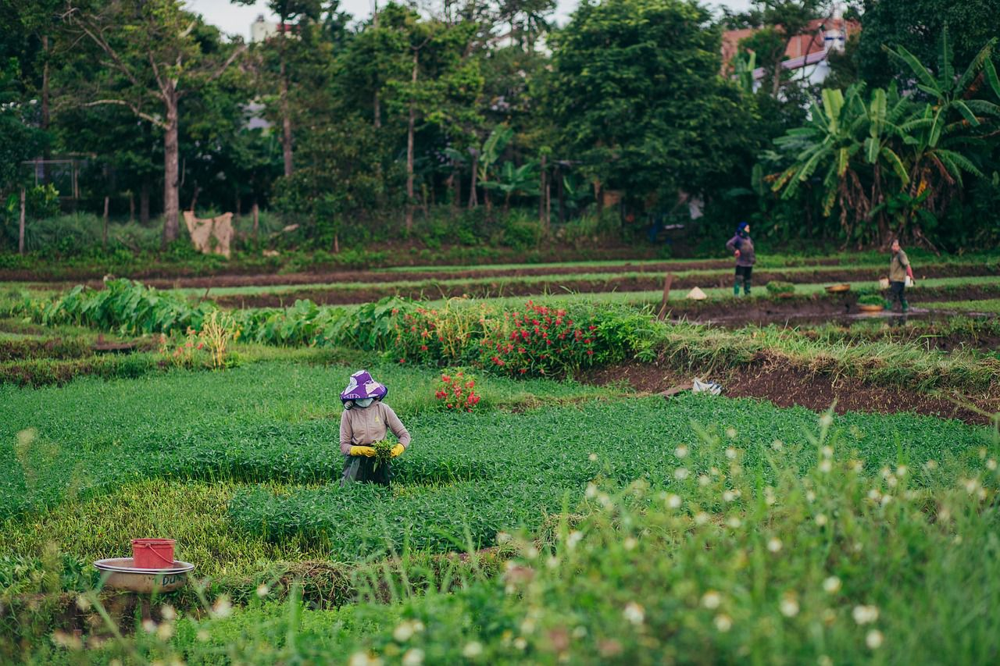

6 Benefícios da Educação Rural
Acesso ao Conhecimento
Levar educação de qualidade ao campo empodera famílias e fortalece a cidadania.

Formação Técnica
Cursos e capacitações voltados à realidade rural geram novas oportunidades.

Fixação dos Jovens
Educação de qualidade ajuda a manter os jovens no campo com futuro promissor.

Inovação no Campo
Conhecimento promove práticas sustentáveis e uso consciente dos recursos.

Fortalecimento Comunitário
A escola rural é um centro de encontro, cultura e transformação local.